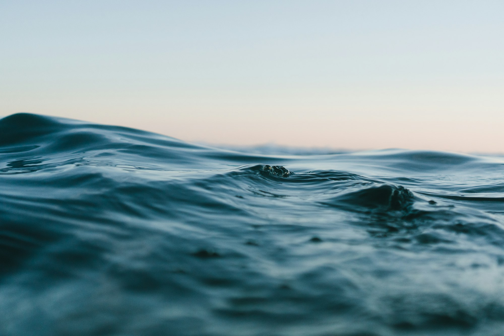
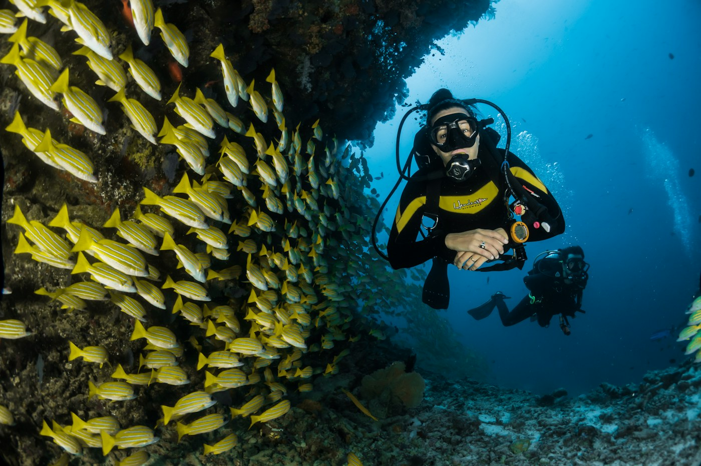

What is changing?
We track habitat condition, species presence, water quality, and coastal exposure across seasons and years.
Explore observations ↗A living observatory for coastal futures
We study the living edges of our blue planet — and the ways healthy seascapes can protect biodiversity, livelihoods, and communities in a changing climate.
Ocean health · Climate resilience · Shared knowledge
36° 09′ N 5° 21′ WCoasts connect the atmosphere, the open sea, and the places people call home. They are dynamic, generous, and under pressure.
Blue Atlas brings ecological observation, climate science, and community knowledge into the same conversation. We ask how reefs, wetlands, seagrass meadows, and working coastlines change over time — and what their condition means for people and wildlife.
How our science worksA question worth asking
Natural habitats can soften waves, hold sediment, store carbon, and make room for life. Their protection is not a substitute for climate action — it is one part of a broader, locally led response.
Read the research briefWe track habitat condition, species presence, water quality, and coastal exposure across seasons and years.
Explore observations ↗We examine how ecological connections and local stewardship shape resilience under multiple pressures.
Explore the methods ↗We make space for the knowledge, priorities, and lived experience of people connected to the coast.
Meet coastal partners ↗PLACE-BASED, PLANET-SCALE
Our learning network follows estuaries, reefs, tidal forests, and seagrass habitats. These illustrative study regions are starting points for shared questions — not a claim that one coastline represents another.
Browse study regionsReliable understanding takes repeated observation, transparent methods, and relationships that last beyond a single survey.
Partners define shared questions. Teams document habitat condition, local context, and what is already known.
FOUNDATIONRepeat surveys reveal patterns that a single visit cannot — including variability, uncertainty, and change.
OBSERVATIONEcological findings are interpreted with coastal communities, practitioners, and public data partners.
IN PROGRESSOpen outputs support future research and locally meaningful choices; the learning cycle continues.
NEXT HORIZON
FIELD NOTE / 06What repeat visits can tell us about the rhythm of a living coast — and what remains uncertain.
Read the field note ↗
RESEARCH / 02Why field protocols pair measurements with notes on place, time, and conditions.
Explore the portal ↗OPEN BY DESIGN
Browse field methods, research summaries, and learning resources built to invite questions — not just provide answers.